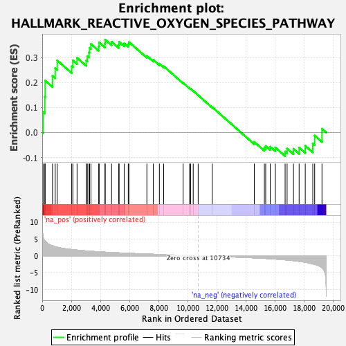
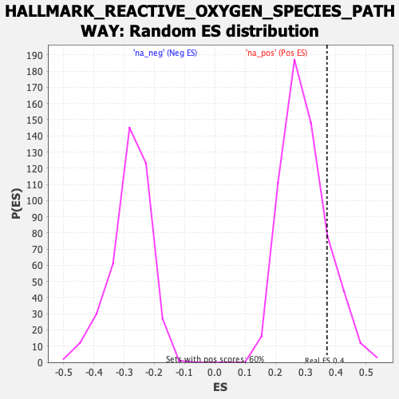

| | | Dataset | PFS |
| Phenotype | NoPhenotypeAvailable |
| Upregulated in class | na_pos |
| GeneSet | HALLMARK_REACTIVE_OXYGEN_SPECIES_PATHWAY |
| Enrichment Score (ES) | 0.37094396 |
| Normalized Enrichment Score (NES) | 1.2533768 |
| Nominal p-value | 0.15191987 |
| FDR q-value | 0.39641982 |
| FWER p-Value | 0.938 |
Table: GSEA Results Summary

Fig 1: Enrichment plot: HALLMARK_REACTIVE_OXYGEN_SPECIES_PATHWAY
Profile of the Running ES Score & Positions of GeneSet Members on the Rank Ordered List
| SYMBOL | RANK IN GENE LIST | RANK METRIC SCORE | RUNNING ES | CORE ENRICHMENT | | 1 | MSRA | 63 | 5.665 | 0.0818 | Yes |
| 2 | GCLM | 179 | 4.490 | 0.1433 | Yes |
| 3 | HMOX2 | 204 | 4.359 | 0.2075 | Yes |
| 4 | G6PD | 709 | 2.948 | 0.2259 | Yes |
| 5 | GLRX | 893 | 2.702 | 0.2571 | Yes |
| 6 | STK25 | 1030 | 2.552 | 0.2884 | Yes |
| 7 | CAT | 2027 | 1.850 | 0.2650 | Yes |
| 8 | CDKN2D | 2107 | 1.807 | 0.2881 | Yes |
| 9 | GCLC | 2395 | 1.685 | 0.2987 | Yes |
| 10 | SOD2 | 3026 | 1.438 | 0.2879 | Yes |
| 11 | FTL | 3099 | 1.411 | 0.3054 | Yes |
| 12 | ATOX1 | 3216 | 1.376 | 0.3201 | Yes |
| 13 | GLRX2 | 3256 | 1.364 | 0.3386 | Yes |
| 14 | GPX4 | 3348 | 1.335 | 0.3539 | Yes |
| 15 | SBNO2 | 3884 | 1.179 | 0.3442 | Yes |
| 16 | OXSR1 | 3915 | 1.170 | 0.3602 | Yes |
| 17 | SRXN1 | 4314 | 1.071 | 0.3558 | Yes |
| 18 | PRDX6 | 4332 | 1.066 | 0.3709 | Yes |
| 19 | GPX3 | 4767 | 0.963 | 0.3631 | No |
| 20 | PRDX4 | 5262 | 0.864 | 0.3507 | No |
| 21 | NDUFB4 | 5286 | 0.860 | 0.3625 | No |
| 22 | NQO1 | 5634 | 0.788 | 0.3565 | No |
| 23 | MPO | 5914 | 0.740 | 0.3533 | No |
| 24 | ABCC1 | 5961 | 0.732 | 0.3619 | No |
| 25 | IPCEF1 | 7195 | 0.517 | 0.3063 | No |
| 26 | PFKP | 7637 | 0.446 | 0.2904 | No |
| 27 | EGLN2 | 8053 | 0.383 | 0.2749 | No |
| 28 | PRDX2 | 8346 | 0.342 | 0.2650 | No |
| 29 | PRNP | 9686 | 0.150 | 0.1985 | No |
| 30 | SOD1 | 10130 | 0.087 | 0.1771 | No |
| 31 | GSR | 10200 | 0.076 | 0.1747 | No |
| 32 | TXN | 10379 | 0.049 | 0.1663 | No |
| 33 | PRDX1 | 10720 | 0.002 | 0.1489 | No |
| 34 | JUNB | 11688 | -0.134 | 0.1012 | No |
| 35 | SCAF4 | 14577 | -0.624 | -0.0377 | No |
| 36 | PDLIM1 | 15271 | -0.779 | -0.0616 | No |
| 37 | TXNRD2 | 15361 | -0.799 | -0.0541 | No |
| 38 | TXNRD1 | 15676 | -0.884 | -0.0570 | No |
| 39 | HHEX | 16024 | -0.982 | -0.0601 | No |
| 40 | NDUFA6 | 16696 | -1.211 | -0.0763 | No |
| 41 | LAMTOR5 | 16833 | -1.260 | -0.0644 | No |
| 42 | MBP | 17271 | -1.440 | -0.0652 | No |
| 43 | LSP1 | 17659 | -1.647 | -0.0604 | No |
| 44 | NDUFS2 | 18080 | -1.908 | -0.0533 | No |
| 45 | FES | 18598 | -2.401 | -0.0438 | No |
| 46 | ERCC2 | 18727 | -2.544 | -0.0122 | No |
| 47 | MGST1 | 19230 | -3.534 | 0.0151 | No |
Table: GSEA details [plain text format]

Fig 2: HALLMARK_REACTIVE_OXYGEN_SPECIES_PATHWAY: Random ES distribution
Gene set null distribution of ES for HALLMARK_REACTIVE_OXYGEN_SPECIES_PATHWAY